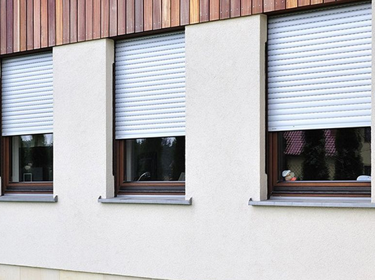

Ми пропонуємо моторизовані карнизи для штор Somfy
Сьогодні такі карнизи – це розповсюджений та зручний спосіб управління великими та досить важкими шторами. Варіанти управління дозволяють вибрати саме те, що Вам потрібно...Сьогодні такі карнизи – це розповсюджений та зручний спосіб управління великими та досить важкими шторами. Варіанти управління дозволяють вибрати саме те, що Вам потрібно...Сьогодні такі карнизи – це розповсюджений та зручний спосіб управління великими та досить важкими шторами. Варіанти управління дозволяють вибрати саме те, що Вам потрібно...Сьогодні такі карнизи – це розповсюджений та зручний спосіб управління великими та досить важкими шторами. Варіанти управління дозволяють вибрати саме те, що Вам потрібно...Сьогодні такі карнизи – це розповсюджений та зручний спосіб управління великими та досить важкими шторами. Варіанти управління дозволяють вибрати саме те, що Вам потрібно...мСьогодні такі карнизи – це розповсюджений та зручний спосіб управління великими та досить важкими шторами. Варіанти управління дозволяють вибрати саме те, що Вам потрібно...Сьогодні такі карнизи – це розповсюджений та зручний спосіб управління великими та досить важкими шторами. Варіанти управління дозволяють вибрати саме те, що Вам потрібно...Сьогодні такі карнизи – це розповсюджений та зручний спосіб управління великими та досить важкими шторами. Варіанти управління дозволяють вибрати саме те, що Вам потрібно...
Сьогодні такі карнизи – це розповсюджений та зручний спосіб управління великими та досить важкими шторами. Варіанти управління дозволяють вибрати саме те, що Вам потрібно...Сьогодні такі карнизи – це розповсюджений та зручний спосіб управління великими та досить важкими шторами. Варіанти управління дозволяють вибрати саме те, що Вам потрібно...Сьогодні такі карнизи – це розповсюджений та зручний спосіб управління великими та досить важкими шторами. Варіанти управління дозволяють вибрати саме те, що Вам потрібно...Сьогодні такі карнизи – це розповсюджений та зручний спосіб управління великими та досить важкими шторами. Варіанти управління дозволяють вибрати саме те, що Вам потрібно...Сьогодні такі карнизи – це розповсюджений та зручний спосіб управління великими та досить важкими шторами. Варіанти управління дозволяють вибрати саме те, що Вам потрібно...мСьогодні такі карнизи – це розповсюджений та зручний спосіб управління великими та досить важкими шторами. Варіанти управління дозволяють вибрати саме те, що Вам потрібно...Сьогодні такі карнизи – це розповсюджений та зручний спосіб управління великими та досить важкими шторами. Варіанти управління дозволяють вибрати саме те, що Вам потрібно...Сьогодні такі карнизи – це розповсюджений та зручний спосіб управління великими та досить важкими шторами. Варіанти управління дозволяють вибрати саме те, що Вам потрібно...
У вас возникли вопросы? Мы с удовольствием ответим!
Сьогодні такі карнизи – це розповсюджений та зручний спосіб управління великими та досить важкими шторами. Варіанти управління дозволяють вибрати саме те, що Вам потрібно...